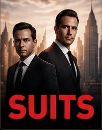
Suits
La mia preferita di sempre. Harvey Specter, il suo carisma e quei dialoghi brillanti. Una serie di cui riguardo volentieri qualche episodio.
Storie, personaggi e mondi in cui mi piace perdermi.

La mia preferita di sempre. Harvey Specter, il suo carisma e quei dialoghi brillanti. Una serie di cui riguardo volentieri qualche episodio.
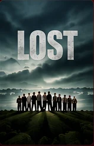
I misteri la rendevano indimenticabile. Ogni episodio portava nuove domande.
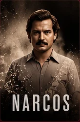
La storia di Pablo Escobar è ciò che mi ha appassionato di più.
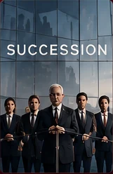
Le lotte per il potere aziendale, le alleanze e la battaglia per il controllo.
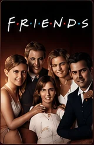
Un pezzo della mia giovinezza. Rivederla mi riporta agli anni in cui ero più giovane.
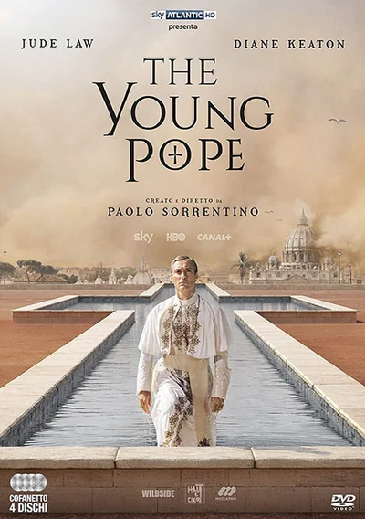
Il mondo di Paolo Sorrentino, tra fede, potere e contraddizioni. Jude Law nei panni di un papa fuori dagli schemi.
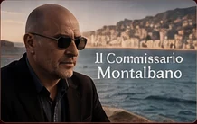
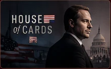
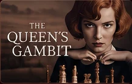
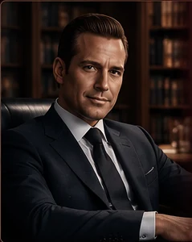
Carisma, sicurezza e dialoghi taglienti. Harvey è ciò che rende Suits speciale per me.
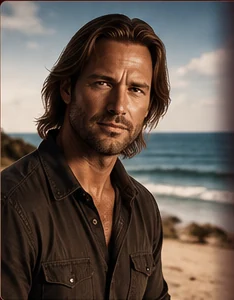
L'ironia, il sarcasmo e il mistero dietro il personaggio rendono Sawyer indimenticabile.